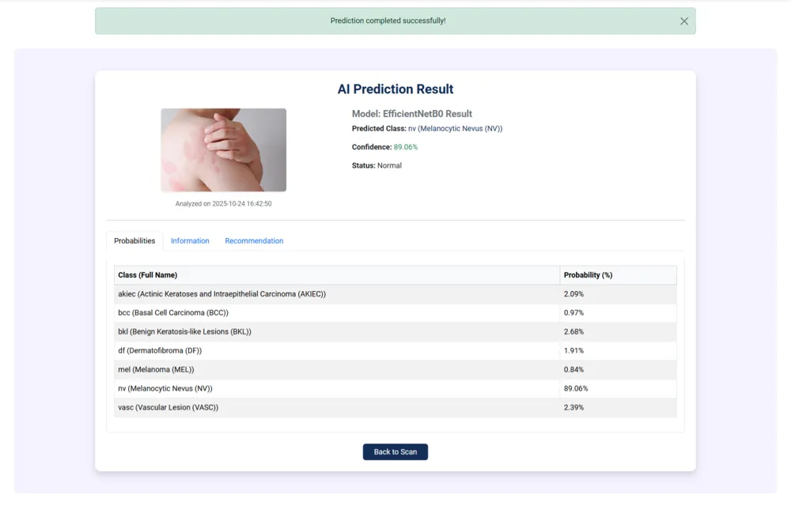
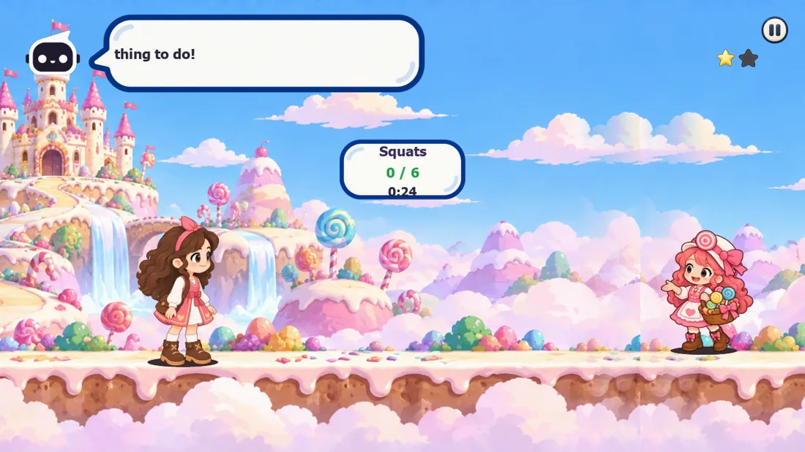

Computer vision
Pose estimation, sequence models and image classification with TensorFlow, MediaPipe and OpenCV.
Built Hakaya's movement model and DermaScan's classifier.
Open to entry-level AI Engineer roles · Riyadh
Hi, I'm Sadeem Aljufranأهلًا، أنا سديم
Computer Vision & Agentic AI. I build AI that sees movement.reads skin lesions.writes stories for kids.respects policy.
I turn AI models into products people can use. My recent work: a webcam model that checks children's exercise in real time, and a web platform that classifies skin lesions from a photo.
About
AI graduate who likes the whole path: collecting the data, training the model, testing it honestly, and shipping it inside a real product.
22,459 pose windows for Hakaya. A 326-person survey for DermaScan.
An LSTM on MediaPipe landmarks. EfficientNetB0 on HAM10000.
A source-level split exposed an earlier 93% accuracy as data leakage.
React + FastAPI for Hakaya. A PHP + MySQL platform for DermaScan.
What I bring to a team
Pose estimation, sequence models and image classification with TensorFlow, MediaPipe and OpenCV.
Built Hakaya's movement model and DermaScan's classifier.
Multi-agent pipelines with LangGraph and the OpenAI API, with rule-based checks around every LLM output.
SDA Agentic AI Bootcamp capstone.
Reviewing AI use cases against policy, data protection and responsible-AI principles.
6-month AI governance internship at the Ministry of Human Resources.
The AI I work with
Tap a node to see where I've used it. Solid nodes are things I've shipped; the dashed one is still on my learning path.
Projects · oldest to newest
From a first chatbot to agents that watch children move. Scroll through the timeline, then open the two case studies.
A conversational chatbot in Python that uses NLP techniques to simulate natural, real-world conversations.
A custom image classification model, built and fine-tuned from the ground up.

Upload a photo of a skin lesion and get an AI analysis across 7 lesion types in seconds.
Read the case study ↓
An AI agent writes a new story for each child, and it only moves on when the webcam sees the child really move.
Read the case study ↓Your team's AI product?
Let's talk →Upload a photo of a skin lesion and get an AI analysis across 7 lesion types in seconds. An educational screening tool that supports early awareness of skin cancer.
01Problem
Ran a 326-participant survey on skin-cancer awareness and trust in AI to guide the UX.
02AI solution
Trained an EfficientNetB0 model on HAM10000 to classify 7 lesion types, from benign moles to melanoma.
03How it works
Connected it to the website: Python runs each prediction and returns every class probability to the PHP interface in real time.
04Product & impact
Designed the multi-role platform: patients track cases and ask for a doctor's review, doctors review, admins manage users, cases and scans.
Hakaya turns screen time into movement: an AI agent writes a new story for each child, and it only moves on when the webcam sees the child really jump, march, run, squat or swim.
01Problem
19%
Screens compete with movement. Hakaya makes the screen the reason to move.
02AI solution
An AI agent writes a new story for each child, and the story only moves on when the webcam sees the child really jump, march, run, squat or swim.
03How it works
04Tested honestly
Tested it honestly with a source-level split (411 sources to train, 60 held out), which exposed an earlier 93% accuracy as data leakage.
05Product & impact
Integrated the React web app with the FastAPI back ends: saved sessions, a parent dashboard and live difficulty adaptation.
Experience
Aug – Oct 2026
SDA · Saudi Digital Academy
6 months
Ministry of Human Resources and Social Development
Education
University of Bisha
Skills & education
Grouped by what I use them for, with where each one shows up in my work.
Used in Hakaya
Hakaya's story agent · Udacity certificate
SDA Bootcamp · Hakaya
Python across every project
DermaScan dashboards · Hakaya sessions
Hakaya's React + FastAPI app · DermaScan's PHP platform
Day-to-day workflow
6-month internship, Ministry of Human Resources
Education
University of Bisha
Certificates
Languages
العربية Arabic (native)Aa English (fluent)
Contact
I'm looking for an entry-level AI Engineer role in computer vision or agentic AI. I'd be glad to walk you through any of my projects.
sadeemjuf@gmail.com